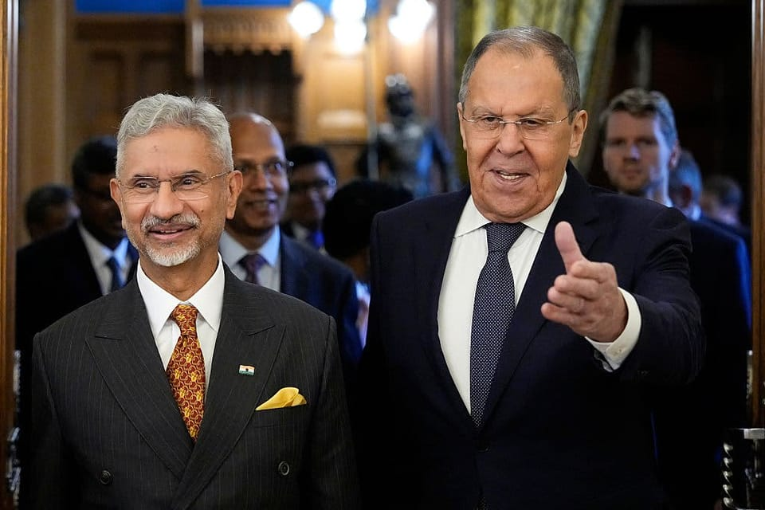

世界苦茶08月24日新闻 | 35条 | 臺灣罷免與核電公投均未通過

臺灣罷免與核電公投均未通過 | 富士康撤離在印度中國工程師 | 印度堅持買俄油不鬆口 | 萬科碧桂園上半年巨虧 | 美國再限制烏克蘭使用導彈襲擊俄羅斯
每日三條新聞解析（模型切换会Gemini）
苦茶数据
美元兑人民币：7.17（昨日7.17，前日7.18）
美元兑日元：146.87（昨日148.70，前日147.38）
上证指数：休市（昨日3825，前日3796）
标普500指数：休市（昨日6466，前日6370）
比特币：114880（昨日115785，前日113055）
布伦特原油：67.73（昨日67.63，前日67.16）
中国新闻
• 谢锋强调中美农业合作 ：中国驻美国大使谢锋说，美国农民与中国农民一样勤劳淳朴，就盼着庄稼有个好收成、卖个好价钱、过上好日子；农业不应被政治化绑架，农民不应为贸易战埋单。据中国驻美国大使馆官网消息，谢锋星期五应邀出席在华盛顿举行的中美大豆产业合作伙伴早餐会并发表演讲。谢锋说，农业是中美起步最早、最富实效、最具潜力的合作领域之一，始终是中美关系的重要支柱之一。跨越太平洋的大豆之旅串联起中美紧密交织的产供链，联结起两国人民的情谊。
• 中研院批评夸大国民党抗战 ：中国国家级研究机构中国历史研究院发文称，公众讨论和学术研究中存在夸大国民党抗战作用的倾向，自称“国军粉”的人片面强调国民党对抗战的贡献，“这些观点不仅违背历史事实，更是颠倒黑白”。隶属中国社会科学院的中国历史研究院，星期五在官方微信公众号发布旗下刊物《历史评论》的文章，题为《不能夸大国民党的抗战作用》。这篇由南京理工大学马克思主义学院副教授郭洋撰写的文章称，近年来，公众讨论和学术研究中存在夸大国民党抗战作用的倾向。部分自称“国军粉”的人，通过剪辑历史影像、改编影视剧情等方式片面强调国民党对抗战的所谓贡献。
• 内蒙古通报形式主义典型 ：中国内蒙古自治区官方通报形式主义典型，自治区发改委、司法厅、应急厅等被点名。据内蒙古日报消息，内蒙古自治区整治形式主义为基层减负专项工作机制办公室星期五会同自治区纪委办公厅通报五起整治形式主义为基层减负典型问题。根据通报，今年1至7月，自治区发展改革委及其牵头的议事协调机构多次违规向盟市党委、政府发布指令性公文，在公文中提出指令性要求。其中有文件直接要求盟市党委主要负责人亲自上手，制定有关问题整改方案，报送整改进展情况。 （翻評：內蒙古剛官場地震。）
• 王沪宁率团慰问西藏各族群众 ：出席中国西藏自治区成立60周年庆祝活动的中央代表团主团和各分团，星期五分赴日喀则和阿里、昌都、那曲、林芝、山南，看望慰问当地各族干部群众，并赠送中共总书记习近平题词“共建中华民族共同体 书写美丽西藏新篇章”贺匾。据新华社消息，中共政治局常委、全国政协主席、中央代表团团长王沪宁带领主团到定日县考察地震灾后重建等情况，并到长所乡森嘎村看望慰问受灾群众。王沪宁要求做细做实家园重建工作，防止因灾返贫，努力建设幸福美好新家园。在日喀则国际陆地港出口货物查验场，王沪宁说，要进一步深化改革开放，提高西藏对内对外开放水平，主动服务对接区域重大战略，推进西藏高质量发展。
• 韩国特使团将访华传信习近平 ：韩国总统李在明派遣的特使团将从星期天起访问中国，并将向中国国家主席习近平转达李在明的亲笔信。据韩联社报道，韩国总统室发言人姜由桢星期五举行记者会并宣布，特使团将于8月24日至27日访华，与中国政府主要人士会晤，传达李在明关于深化两国友好关系的意愿。特使团将于25日同中共中央政治局委员兼外交部长王毅举行会谈，26日同中国全国人民代表大会常委会委员长赵乐际会晤。 （翻評：這次還是有差，李在明是去日本，然後去美國，但是對中國是轉達親筆信。）
亚太印太新闻
• 台湾绿营罢免再败 ：继726全面失利后，台湾绿营对七位在野国民党立法委员发动的第二轮大罢免，星期六再度以悬殊票数惨败，意味着针对31位国民党立委和新竹市长高虹安的罢免案全数未通过，民进党政府将继续面对立法院朝小野大局面。台湾总统赖清德星期六晚在第二轮大罢免结果出炉后在总统府召开记者会，表示尊重与接受这样的结果。他说，对于他上任一年三个月施政不足之处，执政团队会做出检讨，内阁会做必要改组，并调整立法院与行政院的互动等。赖清德也透露，行政院长卓荣泰在7月26日首轮对国民党24位立委大罢免遭遇失败后，已多次向他请辞，但考虑到台美关税谈判尚未底定，台风和豪雨的灾后重建，以及包括明年度中央政府总预算等都在立法院审议，他希望卓荣泰继续坚守岗位、承担重任。
• 台湾大罢免投票氛围冷清 ：台湾大罢免第二波投票与核三电厂延役公投星期六登场，总统赖清德当天回到台南投票，但整体投票氛围依然冷清。台南市选委会估算，截至下午1时许，当地投票率不到两成。综合台湾《联合报》和中时新闻网报道，赖清德星期六早上9时25分抵达位于台南市安平区平安国中的投票所进行投票。当时现场只有他一人投票，工作人员人数甚至超过选民。赖清德在完成投票后在校门口与立委林俊宪、台南市长黄伟哲、副市长叶泽山进行简短谈话，关心灾区修缮与特别预算后的基础建设。随后，他前往台南七股区视察风灾后复建情况，实地探视受灾民众并了解重建进度。
• 朱立伦宣布交棒卢秀燕 ：针对在野31名国民党立法委员的大罢免全部失败后，国民党主席朱立伦说，“这是我顺利交棒、放心交棒的时刻”，他恳请台中市长卢秀燕接棒国民党主席，并表态全力支持卢秀燕领导的国民党团队重返执政。国民党主席朱立伦星期六晚6时40分左右在记者会上说，接下来国民党将迎接2026年选战，和2028重返执政的最大挑战，“我要正式在此宣布，这是我顺利交棒、放心交棒的时刻。”朱立伦说：“我要在这边非常诚挚地恳请卢秀燕市长接任下一任的国民党主席的重棒，承担党主席的重责大任，秀燕的沉稳务实跟温暖，是此刻国民党、此刻台湾最需要的稳定的力量。而我会跟我们所有优秀的青年团队，在所有重返执政的路上，全力努力，绝不缺席。
• 金正恩督导新型导弹试射 ：朝鲜领导人金正恩亲自督导两枚“新型”防空导弹的试射。此一动向发生在美韩首脑会晤前夕。美国总统特朗普与韩国总统李在明预计将于周一举行会谈。综合法新社和路透社报道，此次试射于周六进行，结果显示这两套新型导弹系统具备“优越的作战能力”；但朝中社并未透露导弹的具体性能，只强调其“操作与反应模式基于独特而特殊的技术”，也未说明
• 韩总统李在明谈韩日关系 ：韩国总统李在明形容，韩日两国如“同住一个院子的邻居”，合作空间广阔，但因距离过近，有时会产生不必要的摩擦。他强调，棘手问题应循序渐进地加以解决，对于一时难以化解的难题则要留出充分时间慎重思考，同时在可以推进的领域积极开展合作，这才是两国政界为增进民生福祉应努力的方向。据韩联社报道，李在明星期六在东京与日本首相石破茂举行会谈时说，当前全球贸易体系动荡不稳，国际安全形势复杂严峻，韩日两国在价值、秩序、体制和理念上立场相近，比以往任何时候都更需要加强合作。
• 朝鲜指责韩军挑衅开枪 ：朝鲜指出，韩国军方星期二在朝韩边境地区鸣枪示警，并称这是蓄意挑衅。新华社引述朝鲜中央通讯社星期六的报道说，朝鲜人民军总参谋部副总参谋长、陆军中将高正哲星期五发表谈话说，韩国军方星期二做出“严重挑衅”，用12.7毫米大口径机枪向南部边境线附近正忙于障碍物永久化工程的朝鲜军人进行警告射击。路透社引述高正哲的声明说，若是建筑障碍物的计划受到任何阻碍，朝鲜将“采取相应反制措施”，并且今后对于边境地区无视预警造成的严重后果概不负责。
• 美议员呼吁ICAO阻M503航线 ：美国国会议员星期五呼吁国际民航组织反对中国大陆单方面决定启用靠近台海中线的M503航线之W121衔接航线。据路透社报道，参议员彼得斯、布莱克本，以及众议院中国问题特别委员会的共和党籍主席穆勒纳尔和民主党籍首席成员克里希纳穆尔蒂在联名信中写道：“由于距离台方管辖空域过近，中国大陆这一举措将民航飞机置于危险境地。”信中指出，这一“单方面举动无视国际航空规则和ICAO自身标准，而这些标准强调在共享空域中加强协调与降低风险的重要性。”
科技新闻
• 富士康撤离在印度中國工程师 ：彭博社报道，富士康近期将300名中国籍工程师从印度的苹果装配厂撤出，这或影响苹果加速在印度扩产的计划。富士康旗下的裕展科技此次将位于印度泰米尔纳德邦的工厂的员工撤出已是近几个月以来第二次。知情人士透露，富士康已开始从台湾调派一些工程师到印度，取代撤离的中国员工。今年较早前，北京政府据悉在口头上鼓励监管机构和地方政府，限制当地的科技与配备转移到印度和东南亚地区，以防止企业将生产线迁出中国。
• 苹果起诉Oppo挖角窃密 ：苹果公司起诉智能手机制造商Oppo挖角苹果手表团队一名高薪成员，并怂恿其为其中企的新工作窃取商业机密。根据周四在加州圣何塞联邦法院提交的诉状，传感器系统架构师石辰在六月离职前，为Oppo利益秘密获取苹果健康传感技术的机密文件，以开发竞争性可穿戴设备。诉状表示：“石辰博士隐瞒其即将入职直接竞争对手的事实，安排并参加了数十场与苹果手表技术团队成员的单独会议，以了解他们正在进行的研究。在离职仅三天前的深夜，石辰博士从受保护的 Box 文件夹中下载了63份文件。随后在离职前一天将这些文件传输至USB驱动器。”
财经新闻
• 印度坚守贸易谈判底线 ：印度外长苏杰生星期六说，与华盛顿的贸易谈判仍在继续，但新德里必须坚守一些底线。由于印度增加对俄罗斯石油的采购，印度商品将面临高达50%的额外关税，是华盛顿所征关税中最高之一。25%的关税此前已生效，剩余25%将在8月27日起实施。美国贸易谈判代表团原定于8月25日至29日前往新德里的访问已经取消，粉碎了印度关税可能下调或推迟的希望。
• 印尼就生柴税案胜诉世贸 ：印度尼西亚就欧洲联盟对原产于印尼的生物柴油征收反补贴税向世界贸易组织申诉，世贸组织专家组支持印尼的几项关键主张。印尼于2023年向世贸组织提起诉讼，指控欧盟对它的生物柴油征收关税，违反世贸组织的规则。专家组在星期五发表的结论中说：“我们建议欧盟确保它的措施符合它在《补贴与反补贴措施协定》下的义务。”这个协定是世贸组织框架下规范成员国补贴政策及反补贴措施的核心法律文件。
• 中国7月光伏新增放缓 ：在可能影响可再生能源回报的新政策6月生效后，中国7月新增太阳能装机量进一步放缓。综合彭博社和人民财讯报道，中国国家能源局星期六公布的数据显示，今年7月，新增太阳能装机容量为1104万千瓦，低于6月的1400万千瓦；自6月以来，月度新增装机量延续下滑趋势。今年5月，在政策调整前，中国曾创下单月新增9300万千瓦的纪录。
• 调查显示，在华日企景气恶化 ：一份调查显示，40%的在华日本企业认为中国今年上半年的企业景气有所恶化。中国日本商会星期五在官网公布的问卷调查结果显示，针对2025年1月至6月的企业景气，感到“恶化”及“略微恶化”的日企占40%，较2024年10月至12月的调查增加10个百分点；认为“改善”或“略微改善”的占26%，下降一个百分点。在经营课题方面，“销售价格下跌”居首位，60%的企业作出这一选择；其次是“人力成本攀升”，占58%。
• 特朗普威胁征收家具关税 ：美国总统特朗普星期五威胁要对进口家具征收关税，并称美国政府将对家具业展开调查。特朗普在自家社交媒体Truth Social发文说：“我们正在对进入美国的家具进行一项重大的关税调查……调查将在未来50天完成。”他说，他尚未决定要对进口家具加征多少关税，但称这么做的目的是重振北卡罗来纳州、南卡罗来纳州和密歇根州等州属的家具业。
• 万科上半年亏损近120亿 ：中国房地产商万科今年上半年的亏损扩大至近120亿元人民币，凸显在深圳政府财务支持下，公司仍难摆脱市场低迷带来的压力。综合彭博社和澎湃新闻报道，万科星期五发布2025年半年报称，截至6月30日的六个月内，公司营业收入为1053.2亿元，同比下降26.2%；净亏损为119.5亿元，较去年上半年98亿元的净亏损有所增加。中国房地产市场持续低迷，7月的新房销量进一步下滑，新房价格也加速下跌。尽管万科最大的股东深铁集团增加对公司的资金支持，但整体市场疲软仍给开发商盈利能力带来额外压力。
• 王健林考察新疆谋合作 ：中国前首富、万达集团创始人王健林在考察新疆克拉玛依市时称当地旅游资源丰富，并透露他正与相关方面探讨合作的可能性。综合澎湃新闻和观察者网报道，王健林等人星期三至星期四在克拉玛依考察招商引资、文旅发展等工作。王健林表示，克拉玛依就像是新疆的一颗明珠，旅游资源十分丰富，但在项目规划设计和运营水平上，与一些先进地区相比仍有提升空间。
• 碧桂园预亏逾215亿元 ：负债累累的中国房地产巨头碧桂园警告，公司今年上半年的亏损可能高达215亿元人民币。碧桂园星期五发布公告称，截至6月底的六个月内，公司损失预计在185亿元至215亿元之间，原因包括低利润房地产项目结算规模下降，毛利率持续处于低位，以及物业项目的资产减值增加。相较2024年同期的151亿元亏损，碧桂园今年上半年的亏损额进一步扩大。
• 台积电否认美政府入股 ：台积电董事长魏哲家星期五与快闪访台的美国英伟达执行长黄仁勋共进晚餐后说，美国政府已宣布不会入股台积电。路透社早前引述美国《华尔街日报》报道，美国特朗普政府正考虑入股通过2022年《晶片法案》获得资助的企业股权，但没有计划入股正增加美国投资的大型半导体公司。《华尔街日报》引述美国官员称，政府不打算入股台积电等正加大投资的公司。不增加投资承诺的企业可能需要向政府提供股权，以换取补贴。
俄乌战争
• 特朗普威胁对俄制裁 ：美国总统特朗普再次恫言，如果俄乌和平谈判在两周内没能取得进展，美国将对俄罗斯实施制裁。这显示，阿拉斯加美俄首脑会议结束一个星期后，特朗普对俄国迟迟没准备同乌克兰谈判日益失去耐性。本月15日，特朗普和俄罗斯总统普京在阿拉斯加举行峰会，几天后他宣布已着手安排普京和乌克兰总统泽连斯基会谈，过后他会再同两人举行三方峰会，以结束俄乌战事。可是，至今未见后续进展。特朗普星期五在白宫对记者说，他会在两个星期内决定要怎么应对俄罗斯的无所作为。“我会决定我们接下来的行动，这是一个非常重要的决定。那就是，是否要实施大规模制裁、征收高昂关税，还是双管齐下，或者什么也不做，并说这是你们俄乌之间的战争。”
• 五角大楼限制乌军导弹 ：《华尔街日报》引述美国官员报道，五角大楼一直在暗中限制乌克兰使用美制远程陆军战术导弹系统攻击俄罗斯境内目标，从而削弱了基辅在抗击俄军入侵时的作战能力。路透社目前尚无法独立核实这一消息。消息传出之际，美国总统特朗普对持续三年俄乌战争，以及未能促成和平协议的处境，公开表达强烈不满。
• 泽连斯基呼吁南方国家促和 ：乌克兰总统泽连斯基星期六说，全球南方国家应该推动俄罗斯在与乌克兰的战争中走向和平，包括说服俄罗斯总统普京走上谈判桌。泽连斯基与南非总统拉马福萨通电话后，在社交媒体平台X上发文写道：“我重申，我愿意与俄罗斯总统进行任何形式的会晤。然而，我们看到莫斯科再次试图把一切拖延下去。”泽连斯基又说，至关重要的是，现在全球南方国家应该一起发出信号，推动俄罗斯走向和平。
• 普京称俄美关系改善契机 ：俄罗斯总统普京说，他期待全面恢复俄罗斯与美国的关系，但发展两国关系的下一步取决于美方。据俄罗斯克里姆林宫网站消息，普京星期五晚在下诺夫哥罗德州萨罗夫市会见核工业企业青年员工时说，俄美关系处于二战以来极低的水平，随着特朗普重返白宫担任美国总统，两国迎来改善关系的契机。新华社引述普京说，俄美领导人阿拉斯加会晤是恢复两国关系的第一步，下一步发展取决于美方。他说，俄美机构、公司层面的接触继续进行，双方正在讨论在北极地区和阿拉斯加合作开采天然气的可能性。
• 印度和俄罗斯誓言深化贸易关系，无视特朗普就石油问题发出的关税威胁： 两国重申了促进双边贸易的计划，包括增加印度对俄罗斯的出口。其他计划包括派遣拥有IT、建筑和工程技能的印度工人前往俄罗斯，以帮助解决劳动力短缺问题。一位分析人士表示，美国的关税威胁可能成为印度进一步深化与俄罗斯关系的催化剂。
国际新闻
• 报告指出，高温威胁劳动者健康 ：世界卫生组织和世界气象组织联合发布的研究报告指出，全球变暖正在影响劳动者的健康和生产力。报告说，随着热浪的频率和强度不断增加，劳动者面临的健康风险也在上升，包括中暑和脱水等问题。根据世界气象组织的数据，去年是有记录以来最热的一年，白天气温高达40摄氏度甚至50摄氏度的情况越来越常见。
• 研究显示，美国移出超入境 ：最新研究显示，离开美国的移民人数比入境美国的人数来得多，是数十年来的首次。这显示美国总统特朗普的强硬移民政策正促使人们离开美国，无论是通过驱逐出境还是他们主动选择离开。皮尤研究中心星期四发布对美国最新人口普查数据的分析，结果显示从1月至6月，包括合法和非法居留者的外来人口减少了近150万。在6月份，美国移民总数为5190万，和六个月前的5330万比较有所下降。
• 特朗普称或派兵芝加哥 ：美国总统特朗普星期五说，芝加哥可能成为联邦政府整治犯罪的下一座城市。特朗普在白宫接受媒体访问时说，自联邦政府派出国民警卫队后，首都华盛顿正成为“世界上最安全的地方之一”。他说，国民警卫队会被派往其他地方，让全国各地城市都变得安全。他抨击芝加哥民主党籍市长约翰逊无能，指芝加哥如今一团糟，并宣称芝加哥的一些支持者一直在“呼吁我们到那里去”。
• 荷兰政府危机升级 ：继荷兰极右翼自由党6月宣布退出联合政府后，荷兰政府危机升级。继来自新社会契约党的外交部长费尔德坎普宣布辞职后，这党在内阁中的其余几名部长及国务秘书随即集体退出看守政府。费尔德坎普星期五宣布辞职后，来自新社会契约党的副首相兼社会事务与就业部长埃迪·范海厄姆，教育、文化与科学部长埃波·布鲁因斯，内政和王国关系部长尤迪特·乌特马克，卫生、福利与体育部长丹妮尔·扬森及四名国务秘书相继辞职。新华社报道，至此，联合政府中仅剩自由民主人民党和农民党留在内阁。荷兰首相斯霍夫对新社会契约党的部长集体辞职表示“遗憾”，并强调“需要就当前局势进一步讨论”。他说：“我们都希望加沙地带人道状况得到改善，但遗憾的是未能达成共识。”
• 美政府叫停罗德岛风场 ：美国联邦政府周五下令位于罗德岛外海的一座大型风力发电场停止所有施工，目前电场已完工80%。开发商丹麦再生能源公司沃旭不排除走法律程序。这是特朗普政府近期连串阻挠风力发电措施中的最新案例。沃旭表示，这项Revolution Wind计划在去年取得所有必要许可后开始动工，目标是为美国罗德岛州35万多户家庭供电。美国海洋能源管理局代理局长贾康纳周五发函，下令 “停止计划中所有正进行的活动” ，以便有时间进行审查。函中写道：“特别是，海洋能源管理局正寻求解决与维护美国国家安全利益相关的疑虑。”函中还说 “在海洋能源管理局完成审查前，你们不得恢复施工”。